You're offline - purchases will sync when connected
Purchase Tracker
Today
$0.00
This Week
$0.00
Description
Amount
Category
Food & Dining
Transportation
Shopping
Entertainment
Bills & Utilities
Health & Medical
Other
Add Purchase
Recent Purchases

Synced
No purchases yet. Add your first purchase above!